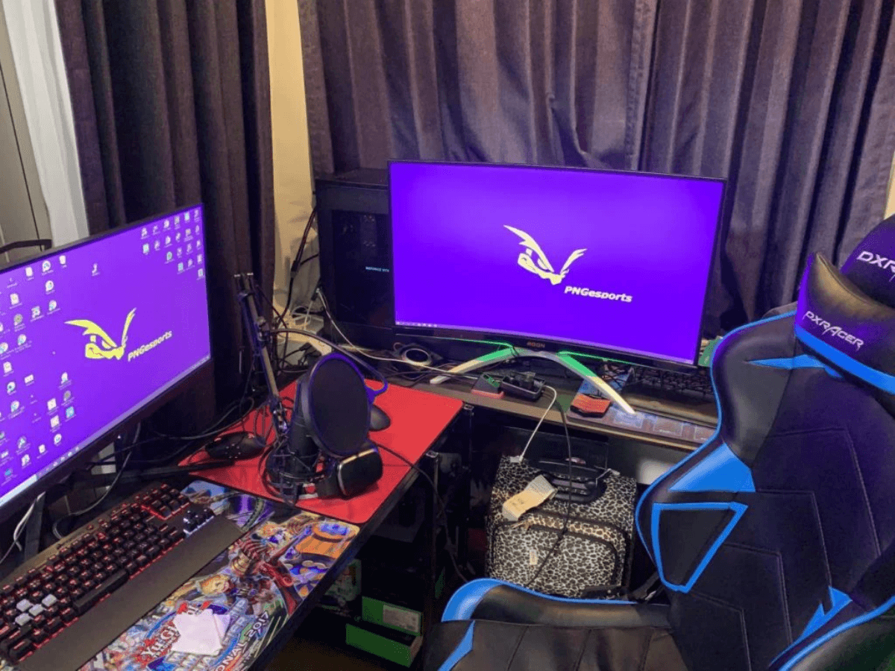
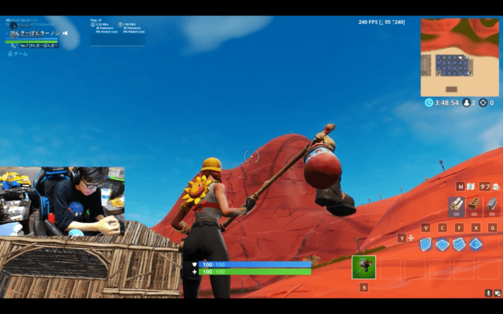

やってまいりました第二回！今回はPINKY-PONKY（ピンキーポンキー）選手に、Fortniteというチームワークが重要なゲームでいかに雰囲気を作っているかに焦点を当てて質問しました。それでは最後まで見ていってください！

プロとしての責任感
– まずは簡単な自己紹介をお願いします
PINKY-PONKYと言います、26歳です。ゲームはFortnite以外にはapexや最近β版が始まったvalorantなんかをやっています。趣味はバス釣りやアームレスリングです。
– なぜプロになろうと思ったんですか？
Fortniteは初めてやるゲームだったんですけどやるなら本気でやりたいのでプロを目指すことにしました。また、ストリーマーとして海外では絶大な人気を誇るNinjyaや日本のesportsチームであるDETONATOR等の影響を受けましたね。
– プロとして気をつけていることはありますか？
言動が一番ですね。差別用語などは言わないように細心の注意を払っています。あとはFortniteプレイヤーには子供も結構多くて、Twitter上でよく喧嘩をするんですけどそういうものには首を突っ込まないようにしています。
– 使用機器などにこだわりはありますか？
とにかくデザインよりも使いやすさを重視して選ぶようにしています
– PNGesportsに入ってみて良いなと思った点はありますか？
代表の山口さんの空気作りですね、とてもアットホーム感があって良いと感じました。また他の部門の選手との仲が良いのも良いところだと思います。

大切なのは”年上の気配り”
– 普段はどれくらいゲームされてるんですか？
もちろん日にもよるんですけど基本は10時間前後ですね。
– それだけ毎日長くやると時には飽きてしまうこともあると思うんですけど何か対策していることはありますか？
Fortnite意外のゲームをやる事でガス抜きをし、飽きるのを防止しています。とにかく大切なことは楽しむことだと思っているので何か思い詰めたりしてしまう時は息抜きをするようにしていますね。
– Fortniteというゲームはチームワークという点が大切になってくると思いますが何か工夫している点はありますか？
話しやすい、プレーしやすい環境を作ることですね。お互いのプレーを指摘しあえる関係が一番チームが成長すると思います。そのためには年長者が言いやすい空気を作らないとダメだと思いますね。
みんなが憧れるヒーロー的存在に！
– PINKY-PONKY選手にとって理想のプロ選手像のようなものはありますか？
カッコ良くて憧れられる選手ですね。それも声がかけやすく親しみやすい選手が理想です。
– 実際に海外の選手と戦ってみて日本との違いみたいなものは感じましたか？
アジアでは韓国や中国が強いんですけど、とにかく一人一人のゲームに対する熱量がすごいなとは思いましたね。
– 今の日本のesportsにもっとこうあって欲しい！みたいなものってありますか？
正直、他のスポーツ選手に比べてモテないですよね、esports選手って（笑）。だからプロの上位の選手にはもっともっと夢を見せて欲しいなと思います。あとはオフラインで試合を見れる会場が増えるといいですね。
– 個人的には応援歌文化みたいなものがあれば面白いんじゃないかなって思っているんですけど選手としての意見はありますか？
試合中はヘッドホンをしていて応援歌が聞こえないと思うのでペンライトなど目で見えるもので応援するような文化にすると良いんじゃないかなと思います。
– 最後に今後の目標があれば教えてください！
PNGのFortnite部門のさらなる発展ですね。個人としてはもっとストリーマー活動に力を入れていきたいと思っています。

さてさて皆さんこんにちは、インタビュアーのnomaです。今回の記事もいかがでしたか？Fortnite部門の最年長ということで大人としての自覚がとてもかっこいいなと思いました。また次回もよろしくお願いいたします。
記事作成者紹介
noma / 野間口陸人
2002年生まれの現高校3年生(2020年4月時)。小学5年生くらいの頃からMinecraft上でのオンライン対戦ゲームにハマり、以後はcsgoを中心にFortniteやapex、r6s等を幅広くプレー。現在は観客が楽しいesportsをテーマに記事を書くなどの活動している。